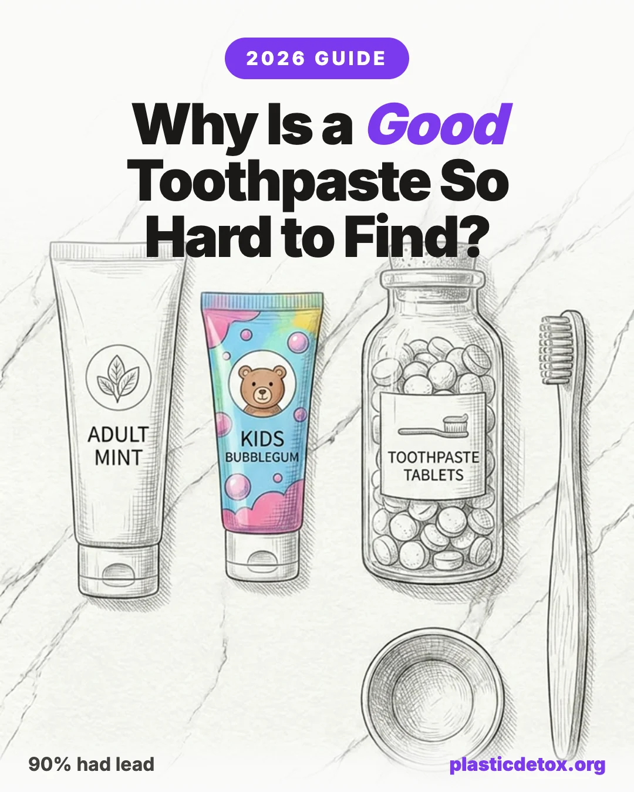

Best Non Toxic Toothpaste (2026): Why It Is So Hard to Find a Good One, the Truth About Fluoride and Hydroxyapatite

The 30 Second Summary
- Almost every popular toothpaste fails on something. Independent lab testing found lead in roughly 90 percent of toothpastes, including the trendy hydroxyapatite brands. Mainstream tubes add titanium dioxide and dyes. Many natural ones have no real active at all.
- The popular "clean" picks did not pass. Independent testing flagged lead in Davids, RiseWell, Boka, Bite, Dr. Bronner's, and Tom's, among others. Being natural or plastic free does not mean it tested clean.
- Never use charcoal pastes or clay tooth powders. Charcoal permanently scrubs away enamel and rebuilds nothing, and clay powders had the worst lead by far, one kids powder at about 7,800 ppb, hundreds of times a normal paste.
- Formula first, packaging last. What goes in your mouth twice a day matters far more for your body than the tube. Plastic free packaging is an environmental win, not a health one.
- Judge two things separately: the active, and the metals. Both fluoride and hydroxyapatite prevent cavities, so a paste with neither active is barely working. Lead is a different issue. It rides in on how a product is sourced, not on which active it uses, which is why both fluoride and hydroxyapatite brands tested positive. You want a real active and a clean lab result.
- The cleanest verified pick: Weleda Salt Toothpaste tested non detect for heavy metals and comes in an aluminum tube. Its tradeoff is no hydroxyapatite active.
- If you want a hydroxyapatite active, there is no clean one. Boka Ela Mint has the lowest measured lead of the tested hydroxyapatite pastes, about 32 ppb, a fraction of Davids or Dr. Bronner's but still not non detect. A hydroxyapatite active with a genuinely clean lab result barely exists yet.
- For kids, pick a tested clean one: Dr. Brown's Baby and Spry Kids both tested non detect. Skip the kids hydroxyapatite pastes (RiseWell Kids, Boka Kids, and NOBS Jr all showed lead), and never give a child a clay tooth powder.
Toothpaste should be the easiest swap in the bathroom. It is cheap, you replace it constantly, and the choices fill an entire aisle. So why is finding a genuinely good one so frustrating?
Because almost every option fails on at least one count. Mainstream pastes work, but pad the formula with a whitener that does nothing for your teeth, dyes, and a foaming agent linked to mouth ulcers. Natural pastes drop those, but many skip a proven active ingredient entirely, and the mineral ones quietly carry more trace heavy metals. Charcoal and whitening pastes can be abrasive enough to wear your enamel. Fluoride is effective but controversial for some families, and the popular alternative has a thinner track record. A truly good toothpaste has to clear all of these hurdles at once, and very few do.
This guide cuts through it. We will explain the real issues with fluoride without the fear, walk through what independent lab tests actually found in mineral toothpastes, and show you the plastic free options worth buying. Most importantly, we will get the priorities straight: when it comes to toothpaste, the formula is what matters most, then the trace metals, and the plastic packaging comes a distant last. You spit the paste out, and you never eat the tube.
Best Toothpastes at a Glance
Here is the uncomfortable headline: most of the famous "clean" toothpastes did not survive independent heavy metal testing, and most natural pastes have no proven active. The short list below is what is actually left once you screen for a real formula and clean lab results. Every pick comes with its honest tradeoff, because the genuinely perfect toothpaste barely exists yet. The full breakdown of why the popular brands failed is below.

Weleda Salt
Non detect for heavy metals in independent testing. Sodium bicarbonate base, aluminum tube, on the market 50 plus years. Tradeoff: no hydroxyapatite active.
View →
Boka Ela Mint
Nano hydroxyapatite, fluoride free, SLS free, no titanium dioxide. Independent testing put it at about 32 ppb lead, the lowest of the adult hydroxyapatite pastes but still not non detect.
View →
Dr. Brown's Baby
Non detect for heavy metals in independent testing. Fluoride free and safe to swallow for the youngest children.
View →
Spry Kids Tooth Gel
Non detect for heavy metals, xylitol based. Fluoride free and safe to swallow for children learning to spit.
View →Why a Good Toothpaste Is So Hard to Find
The problem is that no single category of toothpaste gets everything right. Each one solves one issue while creating another.
- Mainstream pastes work, but pile on the extras. A standard tube usually has an effective fluoride active and a proven cavity record. It also often has titanium dioxide to make the paste bright white, artificial dyes, and sodium lauryl sulfate for foam. None of those clean your teeth, and one or two of them irritate some people.
- Natural pastes cut the extras, but sometimes cut the active too. Plenty of natural toothpastes contain no fluoride and no hydroxyapatite either. They taste nice and avoid the additives, but they are not doing much to strengthen enamel.
- Mineral and clay pastes do more, but carry more. The ingredients that actually rebuild and polish enamel are earth mined minerals, and those minerals carry trace heavy metals. That is exactly why independent testing keeps finding lead in the cleaner looking brands.
- Whitening and charcoal pastes can damage the very thing they promise. Many are abrasive enough to wear enamel over time, which exposes the yellower dentin underneath.
- Fluoride is divisive. It is effective, but a lot of families want to avoid it, especially for children who swallow toothpaste, and the alternatives are newer.
So the search feels impossible because you are being asked to trade off effectiveness, additives, heavy metals, abrasivity, and your stance on fluoride all at once. The good news is that these trade offs are not equal. Once you know which ones actually affect your health, the choice gets simple.
What Actually Matters: Formula, Then Metals, Then Packaging
Here is the single most useful idea in this guide. The things people worry about with toothpaste are not equally important. They fall into a clear order, and most people have it upside down, obsessing over the plastic tube while ignoring what is inside it.
The formula is the whole game. The paste is what touches your teeth, sits in your mouth twice a day, and gets swallowed in trace amounts. A formula with a proven active and without pointless additives does real work. A pretty natural paste with no active does very little.
Trace heavy metals come second. They are worth being aware of, especially for young children, but as you will see below, the dose from a normal amount of a mainstream paste is very small, and the worst offenders are easy to avoid.
Plastic packaging comes last, by a wide margin, as a health issue. This is the part worth sitting with if you are here because you care about plastic. A toothpaste tube is a small piece of plastic that you never ingest. Compared with the microplastics you get from bottled water, food packaging, or household dust, the tube is a rounding error for your body. Plastic free toothpaste is a great choice for reducing waste, and we recommend several below, but choose it as an environmental decision, not because the tube is poisoning you.
The Fluoride Question, Honestly
No ingredient in the bathroom is more argued about. Let us be clear and fair about it, because both the fear and the dismissal get it wrong.
What Fluoride Actually Does
Fluoride strengthens enamel and helps reverse the earliest stages of decay by remineralizing the tooth surface. Used topically in toothpaste at around 1,000 to 1,500 ppm and spat out, it is one of the most studied and effective cavity fighters we have. It is endorsed by the American Dental Association, the American Academy of Pediatric Dentistry, and the World Health Organization. A 2024 Cochrane review analyzing 157 studies confirmed the benefit, while also noting that the extra benefit from fluoridated water is smaller now that fluoride toothpaste is everywhere. If your only goal is preventing cavities with the deepest evidence base, fluoride is the default for a reason.
So Why Do So Many People Want to Avoid It?
Because the concerns are real, even if they are often overstated. They are almost entirely about swallowing fluoride, not about brushing with it and spitting.
- Young children swallow toothpaste. This is the most concrete, best supported concern. Kids under about 8 whose permanent teeth are still forming can develop dental fluorosis, white flecks or spots on the enamel, from swallowing too much fluoride during those years. In the US it is usually mild and cosmetic, and CDC survey data put any fluorosis at roughly 23 percent across ages 6 to 49, higher in adolescents. It is why fluoride toothpaste carries a label telling you to keep it away from children and to call poison control if a child swallows a lot, and why dentists limit the amount for little kids.
- The IQ research. In August 2024 the US National Toxicology Program published a systematic review concluding, with moderate confidence, that higher fluoride exposure is associated with lower IQ in children. The crucial detail that headlines dropped: it was about drinking water above 1.5 mg/L, which is roughly double the US target of 0.7 mg/L, and the report explicitly did not address toothpaste or topical fluoride at all. The studies were mostly from regions with high natural fluoride in the water. It is a real, government finding about ingested water at high levels, not evidence that brushing with fluoride lowers IQ.
- The court case. In September 2024 a federal judge ordered the EPA to address fluoride under the Toxic Substances Control Act, a risk based legal standard rather than a finding that 0.7 mg/L is proven to cause harm. Worth knowing: in May 2026 the Ninth Circuit Court of Appeals vacated that ruling, so as of now there is no standing order requiring the EPA to regulate fluoride. The science and the law here are both still moving.
- Total exposure. Some people simply prefer to control their cumulative dose from water, food, and toothpaste combined, especially for kids. That is a reasonable personal choice.
Other claims you will see online, about the thyroid, the pineal gland, or cancer, range from weakly supported at very high exposures to not supported at all. Honest sources do not lean on them.
The bottom line: fluoride toothpaste, used as directed and spat out, works and is broadly considered safe by mainstream dentistry. If you want to avoid it, for children or for your own reasons, you are not stuck with a paste that does nothing. There is a credible mineral alternative.
Hydroxyapatite: The Mineral Alternative
If fluoride is the conventional active, hydroxyapatite is the mineral one. And it is not a fringe ingredient. It is what your teeth are already made of.
What It Is
Hydroxyapatite is the calcium phosphate mineral that makes up roughly 95 to 97 percent of your tooth enamel by weight. Toothpastes use a finely milled version, often called nano hydroxyapatite, whose crystal size mimics the natural building blocks of enamel. The technology traces back to a 1970s NASA crystal growth patent for tooth repair, which a Japanese company licensed to launch the world's first hydroxyapatite toothpaste in 1980. Japan formally recognized it as an anticavity agent in 1993, and it has been mainstream there ever since.
How It Works
Two ways. It deposits onto and into demineralized enamel, filling in the microscopic lesions where decay begins and acting as a reservoir of calcium and phosphate that feeds the tooth surface. And it plugs the open tubules in exposed dentin, which is why it is so effective at reducing sensitivity.
What the Independent Tests Found
This is where it gets interesting, and where you need to read carefully, because the evidence is genuinely promising but also genuinely young.
- Head to head with fluoride, it holds up. An 18 month randomized controlled trial in adults (Paszynska and colleagues, 2023) compared 10 percent hydroxyapatite against 1,450 ppm fluoride and found it non inferior, meaning it performed about as well at preventing new decay. A one year children's trial on primary teeth (2021) reached the same non inferior conclusion against fluoride, as did a six month trial in high risk orthodontic patients (Schlagenhauf, 2019). An in situ study (Amaechi, 2019) found 10 percent hydroxyapatite essentially equivalent to fluoride for remineralization.
- Independent reviewers are more cautious. A 2022 systematic review (Wierichs and colleagues) found hydroxyapatite roughly equal to fluoride under remineralizing conditions, but fluoride significantly better under acid challenge, and rated the overall evidence quality as very low. A key reason for caution: several of the strongest trials were funded by a hydroxyapatite toothpaste manufacturer.
- It is safe to swallow. This is its clearest, best supported advantage. The EU's safety committee concluded that ingested hydroxyapatite simply dissolves in stomach acid, so there is no fluorosis ceiling and no swallowing limit. That makes it the natural fit for young children and for anyone who wants an effective active without the ingestion worry.
The Catch: Every Hydroxyapatite Paste That Was Tested Had Lead
Here is the uncomfortable fact the marketing leaves out, and the reason this guide does not simply tell you to buy a hydroxyapatite toothpaste. Every hydroxyapatite toothpaste that has been independently tested for heavy metals came back with lead. Boka, RiseWell, Davids, and Bite all tested positive, and of the NOBS tablets only the kids version was checked, which was also not clean, leaving the adult version unverified. At the same time, the products that tested non detect, like Weleda, Dr. Brown's, and Spry, contain no hydroxyapatite at all.
Why does the best active on paper come with the worst lab record? Because hydroxyapatite is itself a mined or synthesized mineral, usually made from phosphate rock or animal bone, and both carry trace lead and arsenic. The brands built around it also tend to stack in calcium carbonate and other ground minerals, adding to the trace metal load. The active is excellent, but the products it currently ships in are not the clean choice their packaging promises.
Fluoride vs Hydroxyapatite, Side by Side
| Factor | Fluoride | Hydroxyapatite |
|---|---|---|
| Prevents cavities | ||
| Remineralizes enamel | ||
| Reduces sensitivity | ||
| Safe to swallow | ||
| US regulatory status | Recognized anticavity drug | Sold as a cosmetic only |
| Best for | Maximum proven cavity protection | Kids, sensitivity, fluoride avoiders |
There is no wrong answer between these two. Both remineralize. Choose fluoride if you want the deepest evidence base, or hydroxyapatite if you want an effective active that is safe to swallow and free of the fluoride debate. What you should not do is choose a paste with neither.
Other Ingredients to Avoid
A good active is necessary but not sufficient. A few other ingredients are worth skipping, mostly because they add nothing useful.
- Titanium dioxide (listed as CI 77891). A whitening pigment that makes paste look bright white and does nothing for your teeth. The EU banned it as a food additive in 2022 over unresolved genotoxicity questions, yet it is still common in US toothpaste. Since you swallow trace amounts, there is no reason to accept a purely cosmetic additive with an open safety question.
- SLS (sodium lauryl sulfate). The detergent that makes toothpaste foam. It does not clean better, and for people prone to canker sores, going SLS free can meaningfully reduce ulcers. If your mouth is sensitive, skip it.
- Artificial dyes. Red, blue, and yellow colorants serve no oral purpose. Easy to avoid.
- Triclosan. An antibacterial that was an endocrine disruption concern. It has largely been phased out of US toothpaste already, but it is worth a glance at the label.
- Synthetic polymers. The plastic scrubbing microbeads that used to be in some pastes were banned in the US, with toothpaste manufacturing ending in 2018, so they are gone. Some formulas still use PEG compounds, carbomer, or acrylates copolymers. These are minor next to the active and the abrasivity, but a simpler ingredient list is a reasonable preference.
On the positive side, xylitol is a welcome addition. It is a sugar alcohol that starves the bacteria behind decay, and it pairs well with either active. Calcium carbonate is a fine mild abrasive and base.
Abrasivity, Whitening, and Charcoal
How rough a toothpaste is gets measured on a scale called RDA, Relative Dentin Abrasivity. The ADA considers anything up to 250 safe for daily use for life. If you have sensitivity, gum recession, or enamel erosion, stay on the lower end.
This is where charcoal toothpaste goes from trendy to genuinely harmful. It is abrasive and it remineralizes nothing, so it scrubs without rebuilding. Over time that grinds away enamel, which does not grow back, and the yellower dentin underneath shows through permanently, the exact opposite of the whitening people bought it for. Charcoal also binds fluoride, so even a charcoal paste that claims fluoride carries it poorly. No charcoal toothpaste has ever earned the ADA Seal, and the ADA explicitly advises against it.
What Independent Tests Found on Mineral and Heavy Metals
Here is the finding that genuinely complicates the search for a clean toothpaste, and it is the reason the cleaner looking brands are not automatically the safer ones.
In 2025, the advocacy project Lead Safe Mama commissioned independent, accredited laboratory testing of 51 toothpastes. The results made headlines:
Lead turned up in about 90 percent of the products, arsenic in about 65 percent, mercury in nearly half, and cadmium in about a third. Crucially, this was real accredited laboratory testing, not a handheld scanner, which is the usual criticism of this kind of work. And the positives were not limited to cheap drugstore tubes. The trendy, natural, and plastic free brands that dominate "non toxic" recommendation lists were squarely in the failing group. Independent testing reported detectable lead in Davids, RiseWell, Boka, Bite, Dr. Bronner's, Tom's of Maine, Burt's Bees, Colgate, Crest, Sensodyne, and Hello, among many others. Being marketed as clean, mineral, or fluoride free told you nothing about whether it tested clean.
That is the single most important reason this guide does not hand you the usual influencer shortlist. The toothpastes most often recommended as "the clean swap," including the popular hydroxyapatite brands, are the very ones that showed lead. A genuinely clean result turned out to be rare.
Why Mineral Toothpastes Carry More
This is the part that explains the whole puzzle. The metals are not added on purpose. They are inherited contaminants that come along with earth mined mineral ingredients. The very things that make a toothpaste do real work, calcium carbonate, hydroxyapatite, and especially clays, are ground from rock and minerals that naturally contain traces of lead and arsenic. Refining reduces them but never gets them to zero. That is why a paste built around minerals tends to test higher than a synthetic gel, and why a genuinely non detect product is hard to find.
One important clarification, because it is easy to get wrong: lead is not part of hydroxyapatite or fluoride themselves. It is a sourcing problem, not a property of the active. A carefully sourced hydroxyapatite can test clean, while a poorly sourced one does not, and plenty of fluoride pastes failed too. So the heavy metal result is a separate check from which active a paste uses. You are judging two different things at once: does it have a real active, and was it made cleanly. The best products pass both, and they are rarer than the marketing suggests.
The Heavy Metal Risk in Context
It would be easy to read "lead in 90 percent of toothpastes" and panic. Do not. Context matters enormously here, and the honest picture is much calmer than the headline.
- Detectable is not the same as dangerous. The "no safe level of lead" principle is a guideline for caution, not a claim that every trace causes harm. The testing project used a very strict non detect threshold, far below any regulator's limit, which is why nearly everything looks like it fails.
- You spit toothpaste out. For adults, the exposure from a normal amount is close to trivial. A pea sized blob is about a quarter of a gram. Even at the higher trace levels, the amount of lead you could absorb from a single brushing is a tiny fraction of a microgram, and most of it goes down the sink.
- A peer reviewed risk assessment was reassuring. An independent toxicology assessment modeled the worst tested adult product and found lead intake roughly ten times below the FDA reference level, concluding the metals are "not anticipated to appreciably increase" toxicity risk when products are used as directed. It still flagged a handful of children's products for stricter limits, so this is not a blanket all clear, but it is far from alarm.
- Toothpaste is a minor source. The dominant sources of childhood lead exposure are old lead paint and dust, drinking water, contaminated soil, and some imported spices and candies, all of which are swallowed in full. Trace lead in a paste you mostly spit out is a small contributor by comparison.
Where it does matter is with young children who cannot reliably spit, since they swallow more of what is in their mouth and absorb lead more efficiently than adults. That is the group worth being deliberate about: use small amounts, supervise, teach spitting, choose reputable brands, and skip the clay powders.
Popular Toothpastes and Why They Fail
Put the pieces together, a real active, clean heavy metal results, a sensible abrasivity, and no pointless additives, and almost every famous toothpaste falls down on at least one. First, the lead numbers, side by side. The chart below plots measured lead for the brands people actually search for. Notice where the trendy "clean" names land.
The heavy metal figures come from independent accredited lab testing published by Lead Safe Mama in 2025, reported in parts per billion of lead, results the brands generally dispute. Formula notes below are our own review.
| Toothpaste | Type | Why It Fails |
|---|---|---|
| Colgate Total / Whitening | Mainstream fluoride | , plus titanium dioxide and SLS. Named in consumer lawsuits over lead. |
| Crest | Mainstream fluoride | , with titanium dioxide and artificial dyes. |
| Sensodyne | Mainstream fluoride | in the whitening version. Effective active, but not a clean result. |
| Tom's of Maine | Natural fluoride | in the kids paste. Settled a class action over heavy metals. |
| Burt's Bees | Natural | in the whitening paste. |
| Hello | Natural, fluoride free | in the fluoride free version. |
| Davids Hydroxi | Hydroxyapatite | , around 457 ppb lead. The recyclable aluminum tube does not offset what is inside it. |
| RiseWell Mineral | Hydroxyapatite | , and no published efficacy research on the formula. The concentration is not disclosed. |
| Boka Ela Mint | Hydroxyapatite | , the lowest of the adult hydroxyapatite pastes. Our least bad hydroxyapatite pick if you want the active, but still not non detect. |
| Bite Toothpaste Bits | Hydroxyapatite tabs | , and no published efficacy research. Great packaging, unproven and not clean formula. |
| Dr. Bronner's | Minimalist natural | , about 160 ppb lead. The cleanest looking ingredient list, not the cleanest lab result. |
| Redmond Earthpaste | Bentonite clay | . Clay is the active, so the metals come with it. |
| Tooth powders (Primal Life, VanMan's) | Clay powder | , up to about 7,800. The worst tested by a wide margin. Avoid, especially for kids. |
| Charcoal toothpastes | Charcoal | Abrasive, no remineralization, bind fluoride so they carry it poorly, and never ADA accepted. |
| Most "natural" no active pastes | No active | No fluoride and no hydroxyapatite, so little real remineralizing benefit. Pleasant, but not doing much. |
| Weleda Salt | Baking soda | Only miss is no hydroxyapatite active. The cleanest verified everyday pick. |
| Essential Oxygen | Organic | that can disrupt the oral microbiome with daily use. Clean metals, but not one we recommend for everyday brushing. |
| NOBS Tablets | Hydroxyapatite tabs | , but the adult version is listed as untested and the kids version tested positive for lead, cadmium, and arsenic. Cannot be verified as clean. |
The Plastic Packaging Question
Now the part that, for a plastic focused site, deserves a clear and slightly contrarian answer. The plastic tube is the least important thing about your toothpaste, for your health.
Think about the exposure pathway. You squeeze the paste out, brush, and throw the empty tube away. You never ingest the tube, so the plastic that touches your body is essentially none. Compare that with the formula, which sits on your teeth and gets partly swallowed twice a day, and the priority is obvious.
That does not mean packaging is worthless. Traditional tubes are a real waste problem, a multilayer plastic and aluminum laminate that recycling facilities cannot separate, so almost all get landfilled. If you want to cut waste, here is how the plastic free formats stack up:
- Toothpaste tablets. Chewable tabs that you bite and brush, shipped in glass jars or refillable tins with low waste refills. The best of them contain a real active, either nano hydroxyapatite or fluoride, so you do not give up the formula to get the packaging.
- Glass jars. Paste or powder in a recyclable glass jar with a metal lid, applied with a small spatula.
- Aluminum tubes. A few brands package paste in a recyclable aluminum tube with a food safe liner, which keeps the squeeze tube format while ditching the plastic laminate.
Choose these because you want less waste and less ocean plastic, which is a genuinely good reason. Just do not choose a worse formula to get better packaging. A plastic free tablet with a real active is excellent. A plastic free paste with no active and a load of clay is not an upgrade.
The Toothpastes That Actually Pass
After screening for a real formula, clean independent lab results, sensible abrasivity, and no needless additives, the list is short and honest. None of these is flawless, and we say what each one gives up. That is the real state of the category in 2026.
Weleda Salt, the cleanest verified everyday pick
Weleda Salt Toothpaste tested non detect for lead, arsenic, mercury, and cadmium. It uses a sodium bicarbonate base, which has real research behind it for plaque control, comes in a recyclable aluminum tube, and has been on the market for over 50 years. Its one honest miss is that it has no hydroxyapatite, so it does not actively remineralize the way a hydroxyapatite or fluoride paste does. The taste is genuinely salty. If your priority is the cleanest verified formula in low waste packaging, this is the pick.
Boka Ela Mint, the lowest lead option if you want hydroxyapatite
There is no hydroxyapatite paste that tested clean, so if you want the mineral active, the honest move is to pick the one with the least lead. Among adult hydroxyapatite pastes with a confirmed number, that is Boka Ela Mint, which independent testing put at about 32 ppb lead. That is still above the 5 ppb non detect threshold, but it is a fraction of Davids at around 457 or Dr. Bronner's at around 160, and well below the 300 plus that many mainstream tubes hit. It is nano hydroxyapatite, fluoride free, SLS free, with no titanium dioxide. Choose it with eyes open: lowest measured lead of the adult hydroxyapatite group, not zero.
Two honest footnotes. RiseWell Kids tested lower at about 26 ppb, but that is a kids product, and for children we steer to the non detect options below rather than any hydroxyapatite paste. And the popular NOBS tablets have the best efficacy research, but the adult version is still listed as untested by the lab, and the NOBS kids version tested positive for lead, cadmium, and arsenic, so we cannot point you there yet.
Best Toothpaste for Kids
Children are the one group where heavy metals matter most, because they swallow toothpaste, and they absorb lead more efficiently than adults. This is exactly where the popular kids brands disappoint. Independent testing flagged lead in RiseWell Kids, Boka Kids, Tom's of Maine kids, Crest Kids, Colgate Kids, and Hello Kids, and the worst results of all were kids tooth powders, one over 7,800 ppb. So for children we steer toward the options that tested non detect, not the ones with the cutest tubes. Skip clay tooth powders entirely.
Dr. Brown's Baby
Non detect for heavy metals in independent testing. Fluoride free and safe to swallow for the youngest children.
View →
Spry Kids Tooth Gel
Non detect for heavy metals, xylitol based, fluoride free. Safe to swallow for children learning to spit.
View →
Weleda Salt
Non detect for heavy metals, aluminum tube. One verified clean tube the whole household can share, once kids can handle the salty taste.
View →For a wider plastic free routine in the bathroom, pair any of these with a better brush. See our guide to why most bamboo toothbrushes still have plastic bristles, and what to use instead. And add a PFAS free dental floss, since many glide flosses are coated with forever chemicals.
How to Choose Yours
Pull it all together into a short decision:
- Want the cleanest verified everyday paste? Weleda Salt. Non detect for metals, aluminum tube, just no hydroxyapatite active.
- Want a hydroxyapatite active? None tested clean, so pick the lowest lead one: Boka Ela Mint at about 32 ppb. Accept that it is least bad, not non detect.
- Have a young child who swallows toothpaste? Dr. Brown's Baby or Spry Kids, both fluoride free and tested non detect. If you prefer fluoride, use only a rice grain under 3 and a pea for ages 3 to 6, and supervise spitting.
- Want maximum proven cavity protection and accept some lead risk? A fluoride paste still works, just know that the mainstream ones tested positive too, so keep the amount small and spit.
- Always skip: clay tooth powders, daily charcoal pastes, and the higher lead hydroxyapatite brands sold to you as clean swaps, like Davids at about 457 ppb and Dr. Bronner's at about 160.
Get the formula right, insist on a clean lab result instead of clean marketing, and treat plastic free packaging as the welcome bonus it is, not the headline. That is how you actually find a good toothpaste, and why the honest list is shorter than the internet pretends.
Frequently Asked Questions
Is fluoride toothpaste bad for you?
At the doses used in toothpaste, and spat out rather than swallowed, fluoride is one of the most studied and effective cavity fighters we have, and it is endorsed by the American Dental Association and the WHO. The legitimate concerns are about swallowing it. Young children who cannot reliably spit can develop dental fluorosis, and a 2024 US National Toxicology Program review linked lower childhood IQ to drinking water fluoride above 1.5 mg/L, which is roughly double the US water level of 0.7 mg/L. That report was about ingested water, not topical toothpaste. If you want to avoid fluoride for children or for personal reasons, nano hydroxyapatite is a credible alternative.
Is hydroxyapatite toothpaste as good as fluoride?
For remineralizing early enamel lesions, head to head trials have found 10 percent nano hydroxyapatite non inferior to fluoride, meaning it performed about as well. Fluoride still has a much larger, longer, and more independent evidence base, decades of population data, and is the only active recognized for cavity prevention by the FDA and ADA in the US. Several of the strongest hydroxyapatite trials were funded by a toothpaste manufacturer, so independent reviewers rate the overall evidence as still emerging. Hydroxyapatite is a reasonable alternative, not a proven replacement, and its clearest advantage is that it is safe to swallow.
Do toothpastes really contain lead and heavy metals?
Independent lab testing published by Lead Safe Mama in 2025 found detectable lead in about 90 percent of the 51 toothpastes tested, along with arsenic, mercury, and cadmium in smaller fractions. That included popular natural and hydroxyapatite brands like Davids, RiseWell, Boka, Bite, Dr. Bronner's, and Tom's, plus mainstream tubes like Colgate and Crest. The metals are not added on purpose. They are trace contaminants that come with earth mined mineral ingredients like calcium carbonate, bentonite clay, and some hydroxyapatite. The levels in most pastes are very low, the product is spit out, and the largest values by far were in clay based tooth powders. A few brands did test non detect, including Weleda Salt, Dr. Brown's Baby, and Spry Kids.
Does the toothpaste packaging matter for plastic exposure?
Not much for your personal exposure. You never eat the tube, and a toothpaste tube is a small amount of plastic. Plastic free packaging like tablets, glass jars, and aluminum tubes is a genuine win for waste and ocean plastic, but it is an environmental choice, not a health one. What goes in your mouth twice a day, the formula, matters far more for your body than what it is packaged in. Get the formula right first, then choose lower waste packaging if you can.
Why is it so hard to find a good toothpaste?
Almost every option fails on at least one axis. Mainstream pastes work well but often add titanium dioxide, artificial dyes, and SLS that nobody needs. Natural pastes drop those but frequently skip a proven remineralizing active, and the mineral ones carry more trace heavy metals. Charcoal and whitening pastes can be too abrasive. Fluoride is effective but controversial for some families, and the non fluoride alternative has a thinner evidence base. A genuinely good toothpaste has to clear all of these at once, which very few do.
What ingredients should I avoid in toothpaste?
Titanium dioxide (a whitener with no oral benefit that the EU banned as a food additive in 2022), SLS or sodium lauryl sulfate if you get canker sores, artificial dyes, triclosan (mostly phased out already), and overly abrasive formulas, including most charcoal pastes. Charcoal toothpastes are abrasive, do not remineralize, and have never earned the ADA Seal. Look instead for a real active, either fluoride or 10 percent hydroxyapatite, plus xylitol, and a sensible abrasivity.
Is charcoal toothpaste safe?
Charcoal toothpaste is best avoided for daily use. It is abrasive enough to wear enamel over time, which can expose the yellower dentin underneath and cause sensitivity, the opposite of the whiter look people want. It does not remineralize teeth, it binds fluoride so it carries it poorly, and no charcoal toothpaste has ever received the ADA Seal of Acceptance. The American Dental Association advises caution.
What is the best toothpaste for kids who swallow it?
Nano hydroxyapatite toothpaste is the cleanest fit for young children who cannot reliably spit, because hydroxyapatite dissolves in stomach acid and carries no fluorosis or swallowing limit. Good fluoride free options include Boka Kids and RiseWell Kids. If you prefer fluoride, use only a rice grain smear under age 3 and a pea sized amount for ages 3 to 6, and supervise brushing so they spit. Avoid clay based tooth powders for children, which test highest for heavy metals.
Does toothpaste contain microplastics?
The visible plastic microbeads that used to be in some toothpastes were banned in the US by the Microbead Free Waters Act, with toothpaste manufacturing ending in 2018. Modern US toothpaste does not contain those scrubbing beads. Some formulas still use synthetic polymers like PEG compounds, carbomer, and acrylates copolymers, which are persistent in the environment, but they are a minor concern next to choosing the right active ingredient and a sensible abrasivity.
What is RDA in toothpaste?
RDA stands for Relative Dentin Abrasivity, a lab measure of how much a toothpaste wears down tooth surface. The ADA considers anything up to 250 safe for lifelong daily use. Below 70 is gentle, 70 to 100 is medium and covers most everyday pastes, and above 150 is high, which is common in aggressive whitening and some charcoal products. If you have sensitivity, gum recession, or enamel erosion, choose a lower RDA paste.
Sources
Related Articles
- Most Bamboo Toothbrushes Still Have Plastic Bristles: What to Use Instead (2026)
The companion to this guide. Get the brush right too, since most "eco" toothbrushes still hide nylon bristles. - Bathroom 101: The Complete Plastic Free Bathroom Guide (2026)
Where toothpaste fits in a whole bathroom swap, from floss to deodorant to shampoo. - Microplastics in Cosmetics and Personal Care Products: What to Avoid and Safer Alternatives (2026)
The synthetic polymers hiding in other personal care products, and how to spot them on a label. - How to Start Reducing Plastic Exposure: A Practical Priority Guide (2026)
The same idea behind this article, applied to your whole home. Start with the biggest sources, not the smallest.